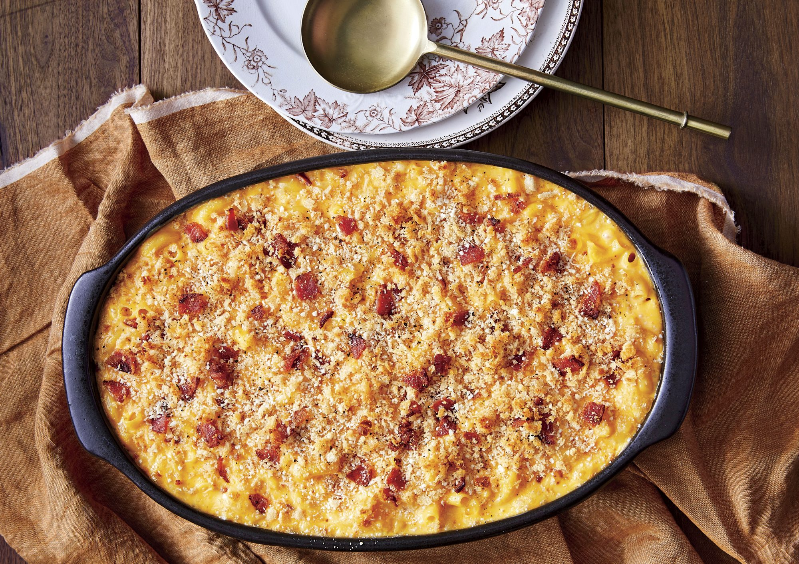

Baked Bacon Mac & Cheese

This what Megan the Stallion was talking about. Everyone gonna be real happy.
Ingredients:
- 1 pound uncooked large elbow macaroni
- 1 tablespoon plus 1 1/2 tsp. kosher salt, divided
- 3/4 cup fresh breadcrumbs
- 2 ounces Parmesan cheese, shredded or grated (about 1/2 cup)
- 6 thick-cut bacon slices, cooked and crumbled, divided
- 1/3 cup all-purpose flour
- 1 teaspoon black pepper
- 1 teaspoon dry mustard
- 3 cups whole milk
- 1 cup whole buttermilk
- 1/3 cup unstalted butter, plus more for greasing dish
- 12 ounces extra-sharp Cheddar cheese, shredded(about 3 cups)
- 4 ounces Monterey Jack, provolone, or mozzarella cheese, shredded (about 1 cup)
- 2 large eggs, well beaten
Directions:
- Preheat oven to 350°F. Bring 3 quarts water to a boil over high in a large stock-pot. Stir in pasta and 1 tablespoon of the salt, and return to a boil. Cook, stirring occasionally, until pasta is tender but still firm, about 6 minutes. Reserve and set aside 2 cups cooking water, and then drain the pasta. Return pasta to pot, and remove from heat. Cover to keep warm.
- Generously butter a 13- x 9-inch baking dish, and set aside. Toss together breadcrumbs; Parmesan cheese; and half of the cooked, crumbled bacon in a bowl, and set aside. Stir together flour, pepper, mustard, and remaining 1 1/2 teaspoons salt in a small bowl. Heat milk and buttermilk in a medium saucepan over medium, undisturbed, until barely steaming but not boiling, 4 to 5 minutes. Set aside.
- Melt butter in a large heavy saucepan over medium-high. Add flour mixture. Cook, whisking often, until mixture is smooth and thick and has a delicate golden color and toasted aroma, about 2 minutes. Slowly whisk in warm milk mixture. Bring to a boil over high. Cook, stirring often, until thickened to the texture of cream, about 3 minutes.
- Stir shredded Cheddar and Monterey Jack cheeses into milk mixture, and remove from heat. Stir in beaten eggs until mixture forms a smooth sauce.
- Uncover cooked pasta, and stir. (If pasta sticks together, stir in reserved warm cooking water, and drain again.) Stir cheese mixture and remaining bacon into drained pasta in stockpot.
- Transfer pasta mixture to prepared baking dish, and sprinkle evenly with breadcrumb mixture. Bake in preheated oven until firm, puffed up, and lightly browned, 35 to 40 minutes. Serve hot or warm.